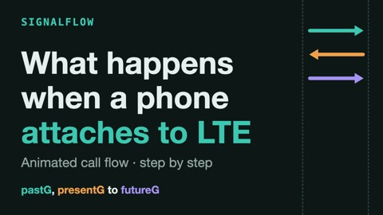
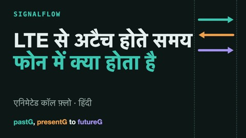

SignalFlow · pastG
SignalFlow
From pastG, presentG to futureG.
← All animations
Animation 1 · Call flow · Beginner
What happens when a phone attaches to LTE
◀◀
Pause
▶▶
Restart
Speed
0.5x
1x
2x
Prefer to watch it as a video?

English
2:17

हिन्दी
2:36